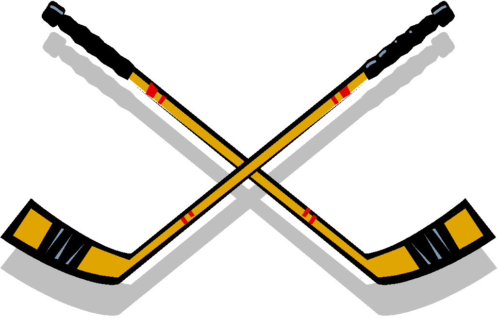

Education
After high school I decided to attend Wentowrth Institute of Technology and study Computer Engineering Technology. I made this decision as I have been interested in computer software and hardware for many years, and decided that I would like to work in the fields of computer engineering. Web Development and Software Engineering are two areas that heavily interest me, and since they both rely upon heavy coding ability I believe that they are a natural pair of skillsets to have. This has led to me growing my skills in both areas in hope of working in the area of software, whether web development of appplication based. I began attending Wentowrth in September of 2013, and will be finishing my studies in April of 2018, due to the CO-OP system that Wentworth has in which I work for 2 semesters instead of attending classes.
Software and Web Development

I am looking to begin my journey as a software engineer and web developer. I first discovered wed development in high school when i took an web design course. In this class i learned simple HTML and how to use Adobe Dreamweaver to create simple web sites. This sparked my interest and i have continued to pursue Web Development outside of my studies at Wentworth.
This has led to my learing and teaching to myself of several important web technologies
- HTML
- CSS(Boostrap)
- JavaScript(node.js, reactjs, jquery)
- PHP
- SQL
Other Interests

Outside of school and work I am a man with many other interests. I play Hokcey and Lacrosse, as well as the occasional softball league. I like to go to CapeCod and enjoy a day doing watersports such as Wakeboarding and Jet Skiing. I bring the same passion to my hobbies as I do to my programming and coding, meaning that I will ensure that everything is doen to a standard that I feel acceptible.